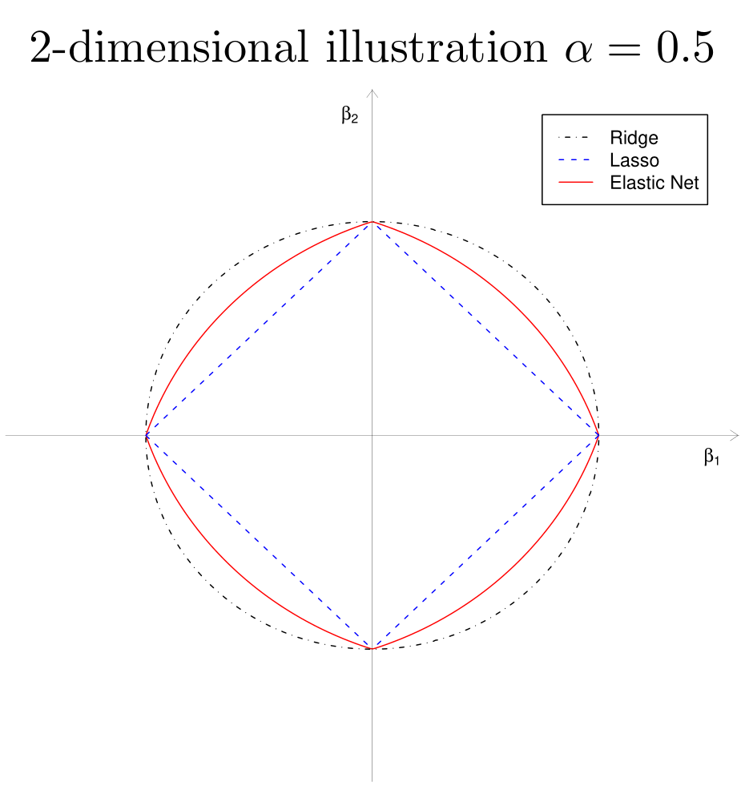
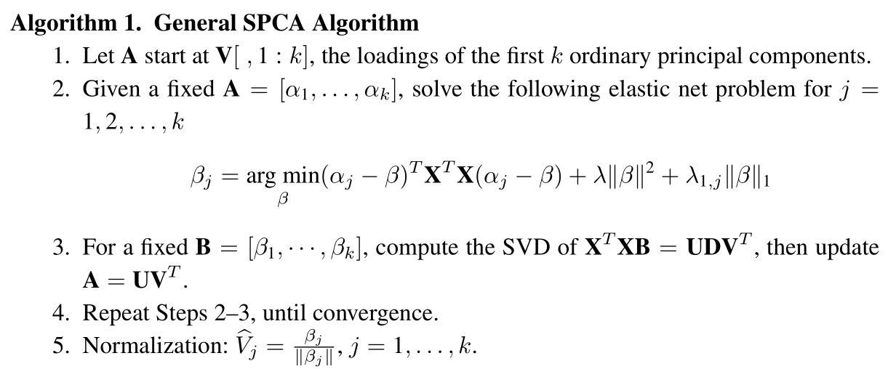

写在前面
介绍稀疏主成分分析算法(Sparse Principal Component Analysis)
线性回归模型
PCA
The Elements of Statistical Learning 14.5里通过线性拟合的角度阐述了主成分的概念，这在SPCA里起到一个辅助理解的作用，在此进行补充。
Rp空间中数据基x1,x2,…,xN的主成分是秩为k(<p)的最佳线性近似序列（正交投影得到线性子空间）
f(λ)=μ+Vkλ
通过重构误差最小二乘对原始数据进行拟合操作
μ,λi,Vkmini=1∑N∥xi−μ−Vkλi∥2
令目标函数对μ和λi的偏导为0可得
μ^=xˉ,λ^=VkT(xi−xˉ)
同时实现会对数据进行去均值化处理，即xˉ=0，因此问题转化为对正交矩阵Vq优化
Vkmini=1∑N∥xi−VkVkTxi∥2
其中Hk×k=VkVkT为投影矩阵，并将点xi映射至秩为k的重构点Hk×kxi，正交投影后的空间是由矩阵Vk的列所张成的子空间。
Lasso
在最小二乘的惩罚下添加对回归系数的ℓ1范数的约束
β^lasso=argβmin∥Y−j=1∑pXjβj∥2+λj=1∑p∣βj∣
可通过最小角度回归LARS算法高效求解。
不适于样本少而维数高的变量选择，回归系数至多有n个非零项，这是因为凸优化问题的性质。
除非系数的ℓ1范数的边界小于某个值(由权衡参数λ确定)，否则Lasso不是良定义的(well-defined)。
Lasso无法进行分组变量(grouped variables)选择，它倾向于从组中选择一个变量，而忽略其他变量。
Elastic Net
为了利用所有变量的信息，对岭回归和lasso进行凸组合
β^en=(1+λ2)argβmin∥Y−j=1∑pXjβj∥2+λ2j=1∑p∣βj∣2+λ1j=1∑p∣βj∣
LARS-EN算法高效求解。- 当λ2=0时，Elastic Net退化为Lasso。
- 引入的二次项
- 去除变量选择个数的限制，即适合样本少而维数高的情况
- 有利于分组变量选择(grouping effect)
- 稳定了ℓ1正则化的路径
Elastic Net 正则化的几何性质
J(β)=α∥β∥2+(1−α)∥β∥1≤t
- 顶点的奇异性（sparsity）
- 严格凸的边，凸度的强度随α而变化（grouping）

稀疏主成分分析(SPCA)
主成分的岭回归
从PCA出发X=UDVT，对主成分Zi=UiDii进行简单的岭回归
β^ridge=argβmin∥Zi−Xβ∥2+λ∥β∥2
则归一化的系数v^=∥β^ridge∥β^ridge与因子载荷相等，即v^=Vi。这表明奇异值分解得到右奇异向量与主成分的岭回归有潜在的关系，这一结论也不难证明。
由XTX=VD2VT和岭回归的显示表达式
β^ridge=(XTX+λI)−1XT(XVi)=Dii2+λDii2Vi
稀疏近似
下面在岭回归的基础上加上ℓ1正则化得到去除倍数的Elastic Net
argβmin∥Zi−Xβ∥2+λ∥β∥2+λ1∥β∥1
对得到的结果单位化V^1=∥β^∥β^并称为右奇异向量Vi的近似，称XV^1为第i个主成分的近似。显然，λ1越大，得到的β^越稀疏，因此V^1越稀疏。
岭回归
考虑一个岭回归问题
β^=argβmin∥y−Xβ∥2+λ∥β∥2
设目标函数的导数为0可得最优解的必要条件
⇒−XT(y−Xβ^)+λβ^=0β^=(XTX+λI)−1XTy
因此目标函数
∥y−Xβ^∥2+λ∥β^∥2=(y−Xβ^)T(y−Xβ^)+λβ^Tβ^=(y−Xβ^)Ty−(y−Xβ^)TXβ^+Xβ^)TXβ^=yT(I−X(XT+λI)−1XT)y
记岭回归算子Sλ=X(XT+λI)−1XT，则满足Xβ^=Sλy 。
PCA重铸为回归模型
上面的优化问题都依赖PCA的结果，下面提出独立于SVD分解主成分的优化问题，建立PCA模型与回归型问题的联系。
首先考虑单个主成分。以第一个主成分为例，对任意λ>0
(α^,β^)=argα,βmini=1∑n∥xi−αβTxi∥2+λ∥β∥2s.t.∥α∥2=1
则β^∝V1。这一结论的矩阵版本可以同时获得所有的主成分。记
Ap×k=[α1,…,αk],Bp×k=[β1,…,βk]
对任意λ>0
(A^,B^)=argA,Bmini=1∑n∥xi−ABTxi∥2+λj=1∑k∥βj∥2s.t.ATA=Ik×k
则β^j∝Vj。
显然，令B=A，则∑i=1n∥xi−ABTxi∥2=∑i=1n∥xi−AATxi∥2，这是一个典型的基于重构误差的PCA模型。由于酉阵不改变矩阵的ℓ2范数，但半酉阵不具备这一性质，因此需要对A补全为[A;A⊥]，其中A⊥是与A正交的半酉阵。
=====i=1∑n∥xi−ABTxi∥2∥X−XBAT∥2∥(X−XBAT)[A;A⊥]∥2∥(X−XBAT)A⊥∥2+∥(X−XBAT)A∥2∥XA⊥∥2+∥XA−XB∥2∥XA⊥∥2+j=1∑k∥Xαj−Xβj∥2
- 若矩阵A固定，上述优化问题转化为k个岭回归问题
argBminj=1∑k∥Xαj−Xβj∥2+λ∥βj∥2
由岭回归的显示解可得
B^=(XTX+λI)−1XTXA
- 固定矩阵B^，目标函数关于变量A的优化问题为
==argAmin∥X−XB^AT∥2+λj=1∑k∥βj∥2argAmintr(XTX)−tr(ATXTSλXA)argAmaxtr(ATXTSλXA)s.t.ATA=Ik×k
因此A为矩阵XTSλX的最大的k个特征值对应的特征向量。设X=UDVT，则
XTSλX=VD2(D2+λI)−1D2VT
故A^=V[,1:k]，这也将岭回归与PCA建立联系，而[A;A⊥]=V。
- 返回去再看B^与V成比例关系。
β^j=(XTX+λI)−1XTXVj∝Vj
岭回归与Lasso的组合:SPCA
(A^,B^)=argA,Bmini=1∑n∥xi−ABTxi∥2+λj=1∑k∥βj∥2+j=1∑kλ1,j∥βj∥1s.t.ATA=Ik×k
该问题对两个变量不是凸的，但对单个变量而固定另一个变量时是凸的，因此采用交替方式迭代。
- 给定A更新B
⟺argBmini=1∑n∥xi−ABTxi∥2argBminj=1∑k∥Xαj−Xβj∥2
令Yj∗=Xαj，优化问题可转化为k个Elastic net 子问题
β^j==argβmin∥Yj∗−Xβ∥2+λ∥β∥2+λ1,j∥β∥1argβmin(αj−β)TXTX(αj−β)+λ∥β∥2+λ1,j∥β∥1
- 给定B更新A
子优化问题为
argAmin∥X−XBTA∥2s.t.ATA=Ik×k
利用Procrustes旋转的降秩表示结论，记SVD:(XTX)B=UDVT，则解为
A^=UVT
note: 上面岭回归中∥X−XB^AT∥2+λ∑j=1k∥βj∥2化成了特征分解问题tr(ATXTSλXA)，这是因为β^j与αj有关（岭回归算子），但此处的β^j是通过LARS-EN算法求解，与αj无直接关系，因此两个问题本质上有区别。
补充：Reduced Rank Procrustes Rotation
设MTN的SVD:MTN=UDVT，则对约束优化问题
argAmin∥M−NAT∥2s.t.ATA=Ik×k
下面对目标函数的范数展开，并利用正交约束和迹函数的性质可得
∥M−NAT∥2=tr(MTM)−2tr(MTNAT)+tr(ANTNAT)∝−2tr(MTNAT)+tr(NTNATA)∝−2tr(MTNAT)=−2tr(UDVTAT)=−2tr(UDA∗T)=−2tr(A∗TUD)
其中A∗=AV满足A∗TA∗=I，对角阵D由奇异值组成，因此优化问题寻找A∗TU对角元素为最大正数的条件。利用Cauchy-Schwartz不等式可知，当A∗=U时取最优解。因此A^=UVT。
算法流程

方差调整
传统PCA算法得到的主成分是无关的，载荷是相互正交的，但是稀疏化后无关性不在满足，这是因为Z^TZ^不是严格的对角矩阵，为此需要对每个主成分做类似Schmidt 正交化，对每个主成分减去前面特征值方向的分量，从而保证正交性
Z^j⋅1,…,j−1=Z^j−H1,…,j−1Z^j
其中H1,…,j−1是投影矩阵，调整后主成分的方差为∑j=1k∥Z^j⋅1,…,j−1∥2=tr(Z^TZ^)（如果无关）。
少样本高纬度
上面的SPCA算法对p≫n是适用的，不过计算量会很大，下面通过一刀切的方式进行简化，即令λ→∞。
令V^j(λ)=∥β^j∥β^j，
(A^,B^)=argA,Bmin−2tr(ATXTXB)+j=1∑k∥βj∥2+j=1∑kλ1,j∥βj∥1s.t.ATA=Ik×k
当λ→∞有V^j(λ)→∥β^j∥β^j。
与SPCA算法相比，只有B^的更新从Elastic Net问题变为如下稀疏优化问题
β^j=argβmin−2αjT(XTX)β+∥β∥2+λ1,j∥β∥1
其解可通过软阈值算子(soft-thresholding)显示表达
β^j=(∣αjTXTX∣−2λ1,j)+sign(αjTXTX)
半正定规划
参考A Mathematical Introduction to Data Science的4.4节
xmaxxTΣxs.t.∥x∥2=1
由于
xTΣx=tr(Σ(xxT))=tr(ΣX)
Xmaxtr(ΣX)s.t.tr(X)=1,X⪰0
该优化问题的最优解是第一个主成分矩阵，其秩为1。因此可以递归地对协方差阵Σk=Σ−∑i<kXi使用该程序可得到前k个主成分。
Xmaxtr(ΣX)−λ∥X∥1s.t.tr(X)=1,X⪰0
其中ℓ1范数的凸化(convexification)可以保证主成分的稀疏性，即#Xij=0非常小。
参考文献